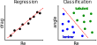

An introduction to supervised learning by example: path regime classification
Andre Weiner, Flow
Modeling and Control Group
Technical University of Braunschweig, Institute of Fluid Mechanics
Outline
- ML terminology and notation
- Path regime classification
- Ideas for applications
- Learning resources
Goal: understand when to use supervised ML
ML terminology and notation
Just enough to get you started ...
Features and Labels
| Feature 1 $Re$ | Feature 2 $\alpha$ | ... | Label 1 $c_d$ | Label 2 regime |
|---|---|---|---|---|
| 334 | 2 | ... | 0.123 | laminar |
| 334 | 4 | ... | 0.284 | laminar |
| 12004 | 2 | ... | 0.573 | turbulent |
| 12004 | 4 | ... | 0.834 | turbulent |
| ... | ... | ... | ... | ... |
Image source: Kitware Inc., Flickr
Supervised ML
Learning based on features and labels
Feature and label vectors
$N_s$ samples of $N_f$ features and $N_l$ labels
| $s$ | $x_{1}$ | ... | $x_{N_f}$ | $y_{1}$ | ... | $y_{N_l}$ |
|---|---|---|---|---|---|---|
| 1 | 0.1 | ... | 0.6 | 0.5 | ... | 0.2 |
| ... | ... | ... | ... | ... | ... | ... |
| $N_s$ | 1.0 | ... | 0.7 | 0.4 | ... | 0.2 |
ML models often map multiple inputs to multiple outputs!
Feature vector
$$ \mathrm{x} = \left[x_{1}, x_{2}, ..., x_{N_f}\right]^T $$ $\mathrm{x}$ - column vector of length $N_f$
$$ \mathrm{X} = \left[\mathrm{x}_{1}, \mathrm{x}_{2}, ..., \mathrm{x}_{N_f}\right] $$ $\mathrm{X}$ - matrix with $N_s$ rows and $N_f$ columns
Label vector
$$ \mathrm{y} = \left[y_{1}, y_{2}, ..., y_{N_l}\right]^T $$ $\mathrm{y}$ - column vector of length $N_l$
$$ \mathrm{Y} = \left[\mathrm{y}_{1}, \mathrm{y}_{2}, ..., \mathrm{y}_{N_l}\right] $$ $\mathrm{Y}$ - matrix with $N_s$ rows and $N_l$ columns
ML model and prediction
$$ f_m : \mathbb{R}^{N_f} \rightarrow \mathbb{R}^{N_l} $$ $f_m$ - ML model mapping from the feature space $\mathbb{R}^{N_f}$ to the label space $\mathbb{R}^{N_l}$ $$ \hat{\mathrm{y}} = f_m(x_1, x_2, ..., x_{N_f}) $$ $\hat{\mathrm{y}}$ - (model) prediction
Path regime classification
Outlook
- (data-driven) modeling for the liquid bulk
- assessment for dynamic interfaces
- application to related boundary layer problems
THE END
Special thanks to David Merker, Jens Timmermann, Chiara Pesci and Dennis Hillenbrand
Thank you for your attention!
Get in touch: weiner@mma.tu-darmstadt.de